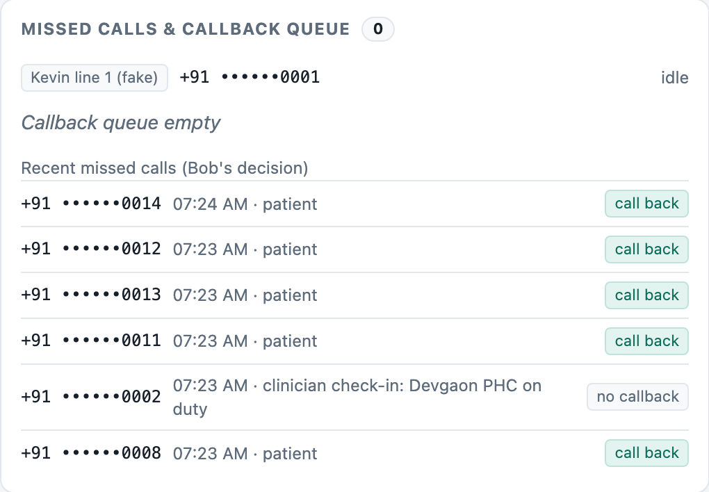
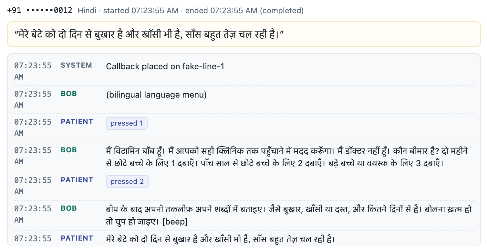
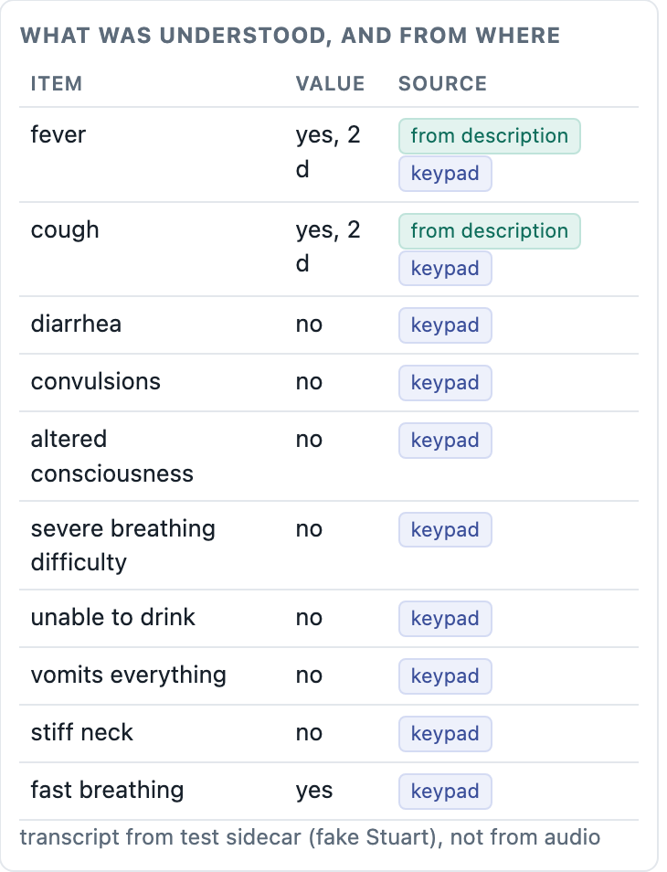
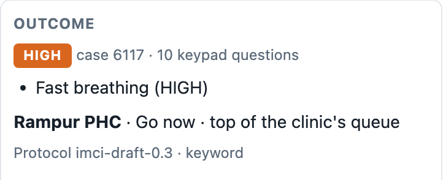
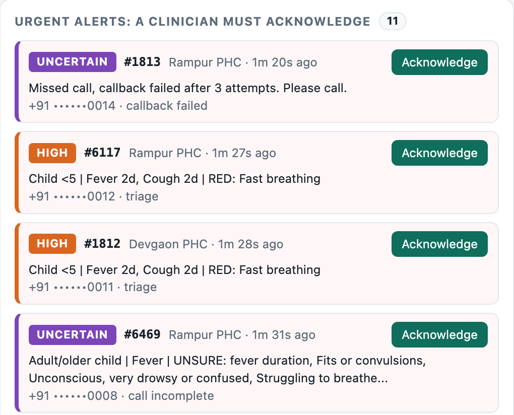
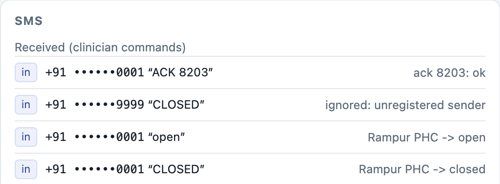
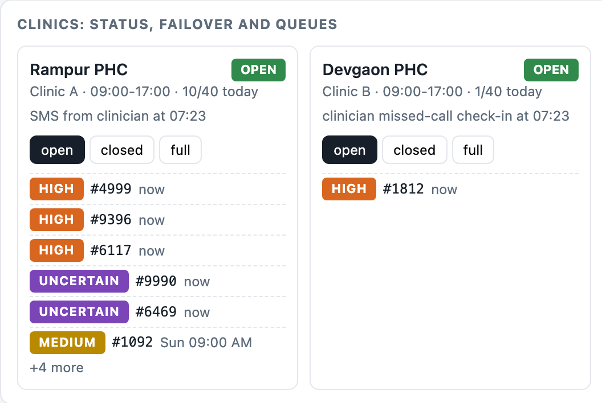
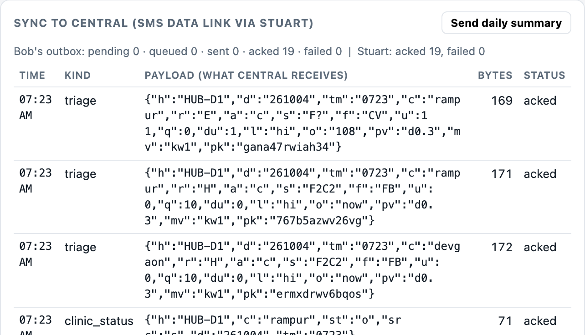

Hack-Nation × World Bank · Small AI for Development · Health track · by Egshiglen, Meet, Rizaldy and Yusril
Why do rural clinics stall?
Too few health workers, too little signal, staff who are not there and forms that eat the visit. Open data for about 195 countries, with Indonesia and India in focus.
Noor lives two hours from the nearest clinic. When she gets there, she joins one queue for everyone. Here is why that queue moves so slowly, why Indonesia is ready to fix it, and why Indonesia and India are worth it, in seven numbers.
Presenting? Use ↓↑ to move between steps.
1 · Too few hands
44%
of countries fall below the WHO minimum of 44.5 health workers per 10,000 people.
DataWHO Global Health Observatory. Doctors plus nurses and midwives, latest value since 2015.
2 · Rural means offline
34
countries are majority rural and majority offline. Almost all are also short of health workers.
The more rural a country, the less of it is online. A tool that needs the internet fails exactly where care is scarcest.
DataWorld Bank WDI: rural population and internet users, latest since 2015.
3 · The roster is not the room
40%
of health-centre staff were missing on surprise visits in India and Indonesia.
Queues punish every missing person. With 10 patients an hour and 15-minute visits, losing one of four staff makes the wait seven times longer. Lose two and the queue never clears.
LiteratureChaudhury et al., provider absence surveys. IllustrativeTextbook queue model; real mornings are worse.
4 · Paperwork eats the visit
26 to 53%
of every consultation goes to writing in registers.
Clinics keep up to 48 registers. Add absence on top, and of 100 rostered clinical hours only about 42 reach a patient.
LiteratureSiyam et al. 2021, five countries. IllustrativeCombined with absence averages.
5 · The rails exist, the staff time does not
26
countries already have power and internet but are still short of health workers. Indonesia and India are both among them.
Electronic records are mandatory in every facility, puskesmas included, since the end of 2023
SATUSEHAT, a national platform, links health records between facilities
SITB, an online TB system, has run since 2020
Local-language AI is being built in-country: open models for Indonesian, Javanese and Sundanese
DataWorld Bank WDI electricity, internet, mobile; WHO GHO workforce. LiteratureIndonesia only: Permenkes 24/2022, Kemenkes SATUSEHAT and SITB, Sahabat-AI. National averages, not every clinic.
6 · Two countries, most of the need
74%
of the people in the 26 countries that are online and powered but short of staff live in Indonesia and India.
DataWorld Bank WDI population, rural population, TB incidence; WHO GHO workforce. Missing health workers = (44.5 − density) × population / 10,000. A headcount view: it shows where one tool reaches the most people, not where need per person is highest.
7 · Nobody can see capacity
6.9%
of Indonesia's 17,862 mapped health facilities list opening hours. Almost none list beds or staff.
Median record completeness is 12.5%. Without hours or capacity, nobody can send a patient to a clinic that is open and staffed.
Datahealthsites.io / OpenStreetMap (ODbL). The map shows the 7,448 facilities mapped as points; 10,414 more are building outlines with no coordinates in this export.
opening hours recordedno hours recorded
So the problem is
Because of Vitamin Bob, a rural patient with any phone will learn in one free call whether to call 108, go to the nearest open clinic now, or come at a booked time, instead of travelling to a clinic that may be closed and waiting in one first-come queue; we know because:
44%of countries lack the WHO minimum health workforce
35 to 40%of health-centre staff absent on a given day
26 to 53%of each consultation spent writing
Built and tested first in India, in Hindi and Gujarati, where the scale is. Indonesia is the readiness case for the next language pack: 73% online, 99.9% electricity, and electronic records already mandatory in every puskesmas. Together the two hold 74% of the people in countries that are ready but short-staffed.
Vitamin Bob turns a free missed call into the right care, in one call
No app, no internet, no cost to the patient. A small AI model on a district laptop listens in Hindi or Gujarati. Fixed rules decide the urgency, and a clinician confirms anything that is urgent or uncertain. Here is one real test call, step by step.
₹0cost to the patient
0urgent cases missed across all evaluation sets
½as many "uncertain" cases with the AI as with a keypad menu alone
~₹0.23estimated cost per case to the health system
1
A free missed call
A mother's son has had a fever for two days and is breathing fast. She has a basic phone and no data. She rings the district number and hangs up before it connects, so the call costs her nothing.
For the districtThe missed call is logged in seconds and queued for a callback. Clinicians use the same trick to say "I'm on duty".

Missed calls and Bob's decision for each. Phone numbers are always masked.
2
The district calls back, in her language
Stuart, the phone module, calls her back from the district line. A recorded menu asks her to press 1 for Hindi or 2 for Gujarati, then who is sick.
Safety by designEvery sentence she hears is a clip recorded in advance and written by the team. The AI never speaks to the patient.

The call timeline: what Bob played and what the patient pressed or said.
3
She describes it in her own words
"मेरे बेटे को दो दिन से बुखार है और खाँसी भी है, साँस बहुत तेज़ चल रही है।""My son has had a fever for two days, and a cough too. He is breathing very fast."
Gemma 4, a small open model running on the district laptop, turns up to 25 seconds of speech into a fixed checklist: which symptoms, for how many days, which danger signs.
No guessingEvery "yes" must quote her own words. Anything without that evidence counts as unknown and is asked on the keypad.

What was understood, and whether it came from her description or the keypad.
4
Only the missing questions, on the keypad
Bob asks yes-or-no questions only for what her description didn't settle: danger signs such as fits, drowsiness or being unable to drink.
1Yes2No3Don't know
Fail safeSilence or a wrong key counts as "don't know", which can only make a case look more urgent, never safer.
5.6keypad questions per call with Gemma in Hindi, vs 6.65 with a keypad menu alone7%of Hindi calls left "uncertain", vs 14% without the model
5
Rules set the urgency, not the model
Fast breathing in a young child is a danger sign in WHO's IMCI guidance, so the rules mark this case HIGH. She hears: go now to Rampur PHC; the doctor will call you.
EmergencyCall 108 now, always
High / UncertainGo now to the nearest open clinic, top of its queue
MediumBooked today or tomorrow at a set hour
LowBooked at the next free slot

The outcome and the reason for it, shown to the clinic.
6
A person makes the final call
Every urgent or uncertain case raises an alert that a clinician must acknowledge, by replying to an SMS or on the dashboard.
Nobody slips throughIf no one acknowledges, the alert moves to the next open clinic, then the referral hospital, then the district officer. A failed callback also alerts a person.

Urgent alerts waiting for a clinician.
7
Clinic closed? The next one takes over
Clinicians report status with one word by SMS (OPEN, CLOSED, FULL) or a free missed call. When Rampur PHC texted CLOSED, the next patient was sent to Devgaon PHC, and the dashboard explains why.
Only trusted sendersMessages from unregistered numbers are ignored, so strangers can't change the routing.


Top: one-word SMS commands from clinicians (a stranger's CLOSED is ignored). Bottom: each clinic's status and queue.
8
The district record stays in sync, without internet
Each case becomes a record under 200 bytes, encrypted and sent to Central by SMS. It holds no name and no phone number: a keyed code stands in for the patient.
Cost the system can carryIn the team's test run, about ₹0.23 per case for callbacks and SMS. The patient pays nothing.

What Central receives: compact records, every one acknowledged.
Screens are real captures of Bob's clinic dashboard (bob/vitamin_bob/dashboard.html), running the team's 17 scripted test calls. All 17 passed, with no contract violations. This capture uses the keyword baseline and test transcripts, not live Gemma audio, with a dummy district and dummy numbers.
Why AI here, and not just a keypad menu
A keypad menu can route a call, but it has to ask every question, and it can't hear what the patient already said. Letting the patient speak first, then asking only what's missing, makes calls shorter. It also leaves far fewer cases stuck as "uncertain", and those cases otherwise fall on scarce clinicians.
Keypad menu only
With Gemma 4
Uncertain calls, Hindi
14%
7%
Uncertain calls, Gujarati
10%
5%
Keypad questions per call, Hindi
6.65
5.60
Missed urgent cases
0
0
Evaluation on 54 synthetic vignettes plus 10 team recordings (4 Oct 2026, Gemma 4 E2B on the demo laptop). On the 10 recordings, through the full audio path, tier accuracy was 100% in both languages. The model's mistakes lean towards over-triage, which is the safe direction.
Runs on what a district already has
One laptopWindows, mid-range GPU. Runs Bob, Stuart and Gemma 4 E2B offline; 5–7 s to understand a 25 s description.
One Android phoneThe district line, connected by USB. Places callbacks and sends SMS.
Any patient phoneBasic or smart. Only a call, the keypad and a voice.
SMS to CentralEncrypted (AES-256-GCM), acknowledged, de-duplicated. No internet anywhere.
What has been proven, and what hasn't
Missed call → callback → answer → hangup on a real phone (Samsung S24 Plus)
Passed
Prompt, keypad input and speech capture on a real call, also with the phone's Wi-Fi and data off
Passed
Outbound SMS delivered exactly once
Passed
Bob + Gemma + Stuart together: Hindi fever → Medium; Gujarati emergency → 108 + alert; clinic closed → High sent to the next clinic
Passed on recorded audio
A full live phone call with Gemma listening
Not yet tested
Incoming clinician SMS on hardware; Central over a real SMS link
Pending
Not covered yet: real patients; clinician review of the danger-sign protocol (drafted by the team from WHO IMCI); dialects beyond the team's voices; noisy phone lines; conditions beyond fever, cough and diarrhoea. Gujarati prompts need a native speaker's check.
Run it, read the code
Integrated demo guide →One launcher for Gemma, Bob and Stuart, plus the five-minute demo script
Bob →Conversation, Gemma 4 understanding, rules, routing, dashboard, evaluation
Stuart →Missed calls, callbacks, SMS, encrypted sync, hardware evidence
Color the map by
Evidence labels
Datacomputed here from a downloaded dataset.
Literaturea number taken from a cited paper.
Illustrativea model with stated assumptions, not a measurement.
Sources
Source
Used for
License
WHO Global Health Observatory (HWF_0001, HWF_0006, UHC_INDEX_REPORTED)
Health workforce density, service coverage
WHO terms of use
World Bank World Development Indicators
Population, rural population and share, internet users, mobile subscriptions, electricity access, TB incidence
CC BY 4.0
Permenkes 24/2022 on Medical Records; Kemenkes (SATUSEHAT, SITB)
Indonesia's digital-health rails
Cited
Sahabat-AI model card (GoTo, Indosat)
Local-language models for Indonesian, Javanese, Sundanese
Cited
healthsites.io / OpenStreetMap via HDX
Indonesia facility map and record completeness
ODbL
Chaudhury, Hammer, Kremer, Muralidharan, Rogers (2004 draft; JEP 2006)
Provider absence on unannounced visits
Cited
Siyam et al. (2021), BMC Health Services Research 21(Suppl 1):691
Recording share of consultation time, registers
Cited
WHO Workforce 2030 (2016)
44.5 per 10,000 threshold
Cited
Natural Earth via world-atlas; Esri Light Gray Canvas
Country shapes; basemap
Public domain; Esri terms
What this data does not show
National averages hide rural and urban gaps; no sub-national data is used.
Waiting times are not measured; the queue is a textbook model.
Absence data is from the early 2000s and covers five countries; recording data covers five other countries.
Correlation is not causation: income drives both workforce and coverage.
The Pareto ranks absolute headcounts, so large countries dominate. India's weight is mostly population; Indonesia ranks 11th of 85 understaffed countries for missing health workers but 2nd for people and TB cases. Per-person need is highest in sub-Saharan Africa.
National infrastructure averages are not clinic-level connectivity. The feasibility view shows where a tool could run, not that every clinic is connected.
Feasibility rule: electricity at least 95% and internet at least 60% count as "digital rails"; fewer than 44.5 health workers per 10,000 counts as "short of staff". The thresholds are ours and adjustable.
Method
Each country's latest value since 2015 is used; years appear next to every number. The full analysis, with code, is the EDA notebook in the project repository.